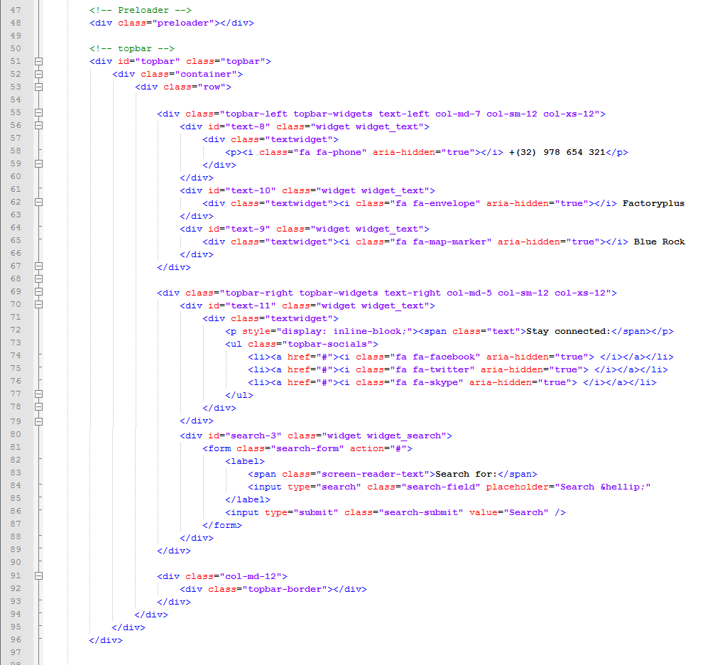

Thank you for purchasing my theme. If you have any questions that are beyond the scope of this help file, please feel free to email via my user page contact form here. Thanks so much!
This theme is a Responsive layout.. The general template structure is the same throughout the template. Here is the general structure.

If you would like to edit the color, font, or style of any elements in one of these columns, you would do the following:
#content a {color: #someColor;}
If you find that your new style is not overriding, it is most likely because of a specificity problem. Scroll down in your CSS file and make sure that there isn't a similar style that has more weight.
I.E.
.container #content a {color: #someColor;}
So, to ensure that your new styles are applied, make sure that they carry enough "weight" and that there isn't a style lower in the CSS file that is being applied after yours.
I'm using one main CSS file and two addition styles one for responsibility layout (skeleton.css) and one other for slider settings, there are general styles for whole theme and reset styles inside main style.css. Many browser interpret the default behavior of html elements differently. By using a general reset CSS styles in this file, we can work round this. This file also contains some general styling, such as anchor tag colors, font-sizes, etc. Keep in mind, that these values might be overridden somewhere else in the file.
/* Induscity - Theme HTML Template */ /************ TABLE OF CONTENTS *************** 1. Reset 2. Global Settings 3. Typography Style 4. All Elements Design 5. Preloader 6. Header 7. Main Navigations 8. Page Conents 9. Carousel 10.News Section 11.Single News 12.services Section 13.Projects Section 14.404 page 15.Back To Top 16.Comments Style 17.Sidebar Widgets 18.Sidebar Services 19.shop Section 20.Shop single 21.Shop widget 22.Contact location 23.Services style 24.Prtfolio Section 25.Testimonials 26.Pricing 27.Counter 28.Our Team 29.Contact info box 30.Progress bar 31.Footer 32.Page Header 33.cart Table 34.Custom Quote 35.check Out page
If you would like to edit a specific section of the site, simply find the appropriate label in the CSS file, and then scroll down until you find the appropriate style that needs to be edited.
Any images that are placed within the blog section have 5px worth of padding and a light bluish background. If you would like to edit the display of these images, find the following section in the style sheet:
#content .entry img {
change styles here:
}
This theme used most popular HTML, CSS, and JS framework;You can see some help info, when click links which are below each regarding framework:
You can see some help info, when click links which are below each regarding css:
You can see some help info, when click links which are below each regarding fonts:
This theme imports 10 Javascript files. You can see some help info, when click links which are below each regarding script:
I've included three psds with this theme:
I've used Slider Revolution jQuery plugin in this template.
I've used the following images, icons or other files as listed.
Once again, thank you so much for purchasing this theme. As I said at the beginning, I'd be glad to help you if you have any questions relating to this theme. No guarantees, but I'll do my best to assist. If you have a more general question relating to the themes on ThemeForest, you might consider visiting the forums and asking your question in the "Item Discussion" section.
Induscity - Responsive Induscityl HTML5 Template